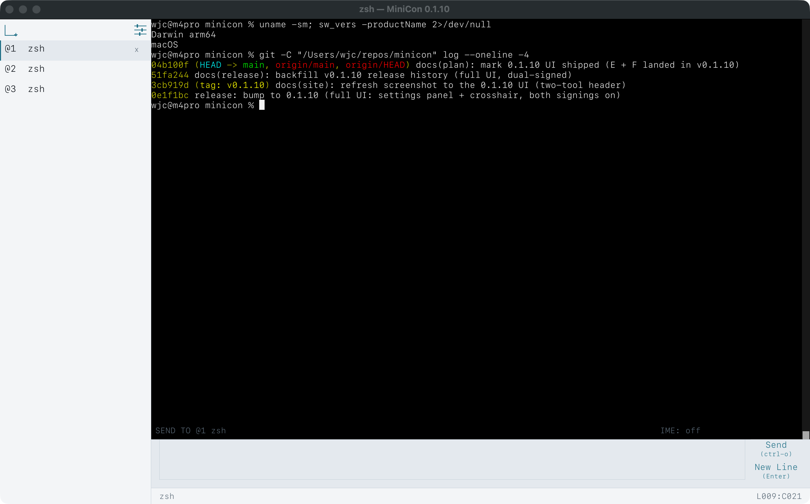
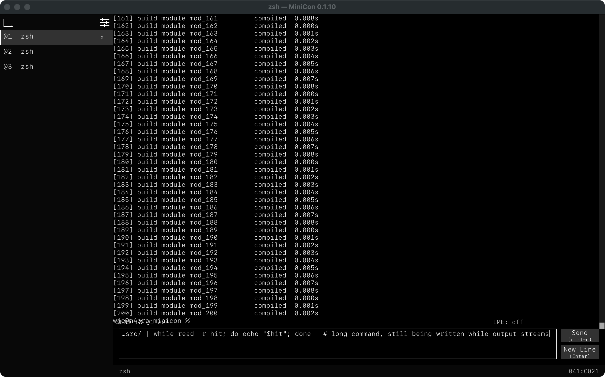
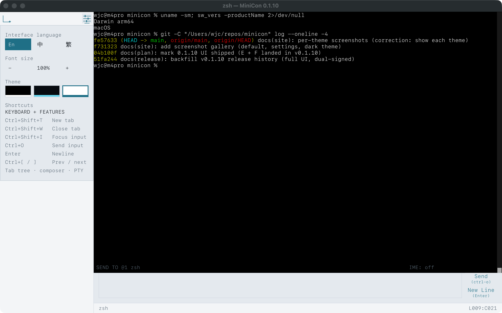
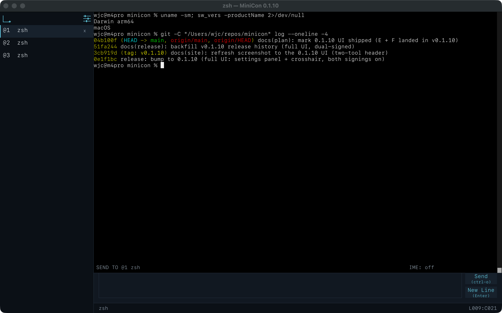
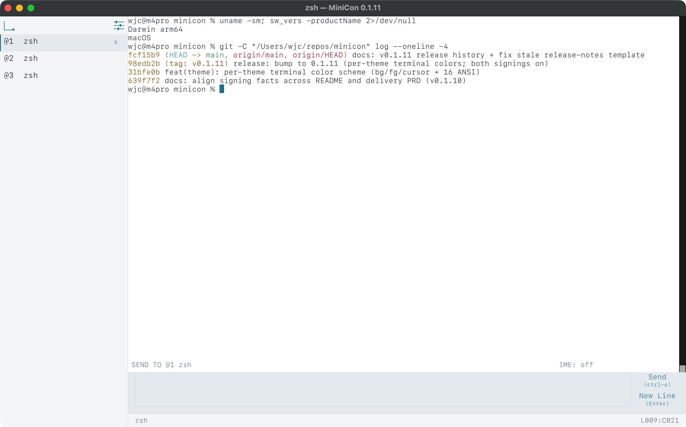

one file · no install · nothing left behind
A terminal that is one file.
Copy it over. Run it on a normal desktop.
Copy one file and run it — a fast terminal for Windows, macOS, and Linux, with an input line of its own and a control command your scripts can read.

A place to type that is not the output.
In most terminals you type into the same area a program is printing into, so a long command and a burst of output get tangled together. MiniCon gives your input its own line.

Compose while it scrolls
Write a long command while output keeps arriving. Nothing you type interleaves with anything a program prints.
A sent line survives being sent
Up and Down walk what you sent before. Half-typed text is kept while you browse.
Named, not numbered
The label shows the name of the tab your text will go to — so in a tree of tabs you always know where a command is headed.
A terminal your scripts can see into.
Sending a keystroke is easy — but blind. MiniCon's control command reads back what the window actually shows — text, screenshots, focus, tabs — so your automation waits for a real result instead of guessing with a sleep. It is all local: no server, no network, no cloud.
# start a session with a local control endpoint minicon --control unix:/tmp/minicon-build/control.sock # Windows: minicon --control pipe:\\.\pipe\build # run something, then wait for it — no sleeps minicon cli --control unix:/tmp/minicon-build/control.sock send-text "cargo test\r" minicon cli --control unix:/tmp/minicon-build/control.sock wait-text --timeout-ms 600000 "test result" # read the result as text, or as a picture minicon cli --control unix:/tmp/minicon-build/control.sock capture-pane minicon cli --control unix:/tmp/minicon-build/control.sock screenshot-pane --output run.png
Make it yours.
Three built-in themes, and a settings panel with everything in one place — language, font size, theme, and the shortcut list.

Three built-in themes. Switch in Settings, or cycle with Ctrl+Shift+P.


Open, safe, and small — on purpose.
MIT OR Apache-2.0, and it stays that way. Read every line, build it yourself, fork it. No telemetry, no account, no auto-updater, no phone-home — the source is the product.
The Windows and macOS downloads are code-signed, and the macOS build is notarized by Apple, as PARTNERNET SOFTWARE PTY LTD — so your system trusts them out of the box. Nothing runs in the background, and it uses only the libraries your OS already ships.
One file — about 660 KB on Windows, 1.4 MB on macOS, 5 MB on Linux (real measured sizes, not estimates). No installer, no bundled language runtime.
It starts instantly, uses little memory, and runs no background service. Keep a real shell session with full scrollback while it is open; close the window and nothing is left behind.
Works on older Windows, too.
Newer terminals need a recent Windows build and simply will not start on older machines. MiniCon runs all the way back to Windows Server 2016: it uses the modern console when it is there, and quietly runs your shell itself when it is not — so the same download just works.
It runs on Windows Server 2016 and up. Everything it needs is in the one file — nothing extra to install. How it works →
Download
Pick your platform and run the file. No installer, and no runtime to add first.
Advanced: one signed minicon.com launcher bundles every platform in a single file.
About 660 KB on Windows, 1.4 MB on macOS, 5 MB on Linux — measured, not estimated. Open source (MIT OR Apache-2.0); no telemetry, no account, no auto-updater.
# or build it yourself git clone https://github.com/partnernetsoftware/minicon cd minicon cargo build --release # target/release/minicon[.exe]
Documentation
Written to be checked. Every number here came from a real measurement.
Running on old Windows
Why other terminals stop at recent Windows builds, what MiniCon does instead, and how to diagnose a machine that still will not start it.
Driving MiniCon from a script
The full control surface: read state, wait on conditions, send input, manage tabs, run one command.
Source and tests
Everything claimed here is pinned by the test suite — the download sizes, the Windows dependency check, and the control command's own behavior.